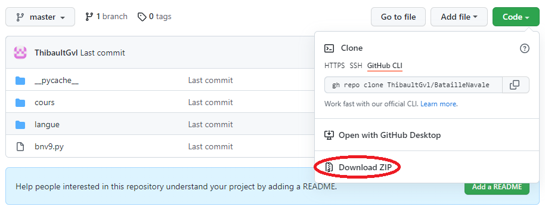

Tutoriel de téléchargement du logiciel

Tout d'abord il vous faut télécharger le dossier contenant notre jeu pour ceci rendez-vous à
cette adresse, une fois que vous y serez vous téléchargerez ensuite le dossier zip disponible en cliquant sur le bouton déroulant "code".
Maintent que vous avez le dossier il ne reste qu'à l'extraire dans vos dossier et à l'ouvrir avec Spyder ou un autre IDE python. Si vous n'en avez pas, nous vous invitons à vous rendre sur ce site.
Une fois ouvert vous aurez accès au programme de notre logiciel. Pour une experience de jeu optimal il y a plusieurs paramètres que vous devriez peut-être changer, premièrement nous vous conseillons de modifier les variables largeur et hauteur (ligne 16 et 17)
en fonction de la taille de votre écran. Il est aussi possible de modifier quelques valeurs pour vous approprier un peu plus notre logiciel ! Vous pouvez par exemple modifier le nombre de cases
(variable cote ligne 28) pour avoir une plus grande grille, vous pouvez aussi modifier le nombre de bateau par type (variable bateau ligne 133) si vous souhaitez, par exemple, ajouter un bâteau de taille 2 à cette partie il vous suffit de rajouter 1 au nombre
déjà présent à l'index 2 (Attention à ne pas mettre plus de bateaux qu'il n'en faut !). Une fois que vous aurez modifié (ou non) les paramètres, vous n'aurez plus qu'à lancer le programme via ce bouton  .
.
Guide d'utilisation
Une fois le programme lancé vous allez accèder au jeu, vous allez pouvoir placer vos bateaux un par un grâce à un glissé déposé en appuyant de façon continue sur le clic gauche de la souris, vous pourrez aussi modifier la position de votre bâteau en appuyant sur la clic droit de la souris. A noter que dans notre version il n'est pas possible de coller les bateaux ! Lorsque vous aurez placé tous vos bateaux la partie se lancera et ce sera alors le moment pour vous de couler tous les bateaux ennemis ! Pour se faire il vous faudra, à votre tour, choisir les bonne cases pour pouvoir couler des navires pour bien voir où vous cliquerez nous avons développé un système qui vous permez de suivre le mouvement de votre souris sur les cases et vous indiquant si, oui ou non, vous pourrez cliquer à cet endroit pour tirer. Ensuite ce sera au tour de votre adversaire, une intelligence artificielle, qui fera de son mieux pour mettre à mal votre flotte, vous pourrez suivre ses mouvement grâce à une image rouge se développant sur l'écran. La partie s'arrêtera automatique lorsque l'un d'entre vous aura coulé la totalité des navires adverses. N'hésitez pas à nous contacter via l'onglet Contact si vous avez le moindre problème ou pour une question quelconque.